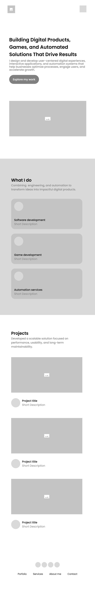

Site Name
Devfolio
The name joins developer and portfolio into a single word that states exactly what the site is. It is short, easy to spell after hearing it once, and it reads the same in English and Spanish, which matters for a developer based in Ecuador who applies to work with teams abroad. The name also scales: as the catalog of projects grows, the brand still fits.
Optional domain availability: devfolio.dev
Site Purpose
Devfolio is a personal software portfolio that gives recruiters, hiring managers, and potential clients a fast, honest picture of what I have built and how I work.
The work is organized into three practice areas, which are introduced on the home page and used to filter the project catalog:
- Software development — web and desktop applications built with contemporary tooling.
- Game development — interactive projects, prototypes, and game mechanics.
- Automation services — scripts, integrations, and process automation that remove manual work for a business.
The site provides:
- A filterable catalog of projects, each described by its practice area, technology stack, year, and my role on it.
- Detailed project information in a modal dialog so a visitor can inspect one project without losing their place in the catalog.
- A services and background section covering how I work and what I can be hired to do.
- A contact form that lets a visitor describe a project idea or a job opportunity and send it for follow up.
Project data is stored in a local JSON file so the catalog can grow without rewriting markup. It will hold at least fifteen entries across the three areas, including client work, course projects, and small utilities, so a visitor can judge both range and depth.
Scenarios
These are questions a visitor from the target audience would arrive with. The content of the site is built to answer them.
- Does this developer work in the area I need, software, games, or automation?
- Has this developer built anything with the technology stack my team already uses?
- What did this person actually do on each project, and was it individual or team work?
- How do I get in touch to discuss a job opening or a freelance project?
Color Scheme
The palette is built around a dark navy that carries the structural elements and a teal that signals interaction. Every color below is applied to this document, and each combination was checked against the WebAIM Contrast Checker at the AA level.
| Swatch | Color | Where it is used |
|---|---|---|
Deep Navy #1B2A41 |
Header and footer backgrounds, all headings, table headers, and navigation bar on the project site. | |
Signal Teal #0E7C6B |
Text links, section accent borders, form focus outlines, and active filter buttons. | |
Bright Teal #38E1C6 |
Accents on dark backgrounds only, such as the header subtitle and quote borders, where the light value carries enough contrast. | |
Paper #F7F9FB |
Page background and text placed on dark navy surfaces. Project cards sit on white to lift them off this background. |
Body copy uses #2A3B55, a softer navy that keeps long paragraphs comfortable to read while holding a contrast ratio above 10:1 on the page background.
Typography
Two typefaces are used, both applied to this document.
- Space Grotesk
- Applied to all headings, table headers, figure captions, and short labels. Its slightly technical, geometric letterforms suit a software portfolio and give headings a distinct voice against the body copy.
- Inter
- Applied to body paragraphs, lists, table cells, and form fields. Inter was designed for screen reading at small sizes, which keeps project descriptions and form labels legible on a 320px viewport.
Space Grotesk sets the headings
Inter carries the body copy, list items, and every longer passage of text across the site.
Wireframe
Layout sketches of the home page for a small viewport and for a wider viewport. Both views carry the same four blocks in the same order, so the structure stays recognizable as the screen grows: a hero with the headline and primary call to action, a "What I do" band holding the three practice areas, a projects gallery, and the footer.
The layout changes in how those blocks are arranged. On mobile everything stacks into a single column, the hero image drops below the text, and the navigation collapses behind a menu icon. On wider screens the navigation opens into a horizontal row with a "View Projects" button, the hero splits into text on the left and image on the right, and both the practice area cards and the project cards move into three column rows.

![Wireframe of the Devfolio home page in a desktop viewport. A horizontal navigation bar holds the logo, four links and a View Projects button. The hero places the headline, supporting text and Explore my work button on the left with an image on the right. A What I do band centers its heading above three side by side cards for software development, game development and automation services. A Projects section shows three project cards in a row, each with an image, title and short description. The footer places navigation links on the left and social icons on the right.](siteplan/images/wireframe-desktop.jpg)